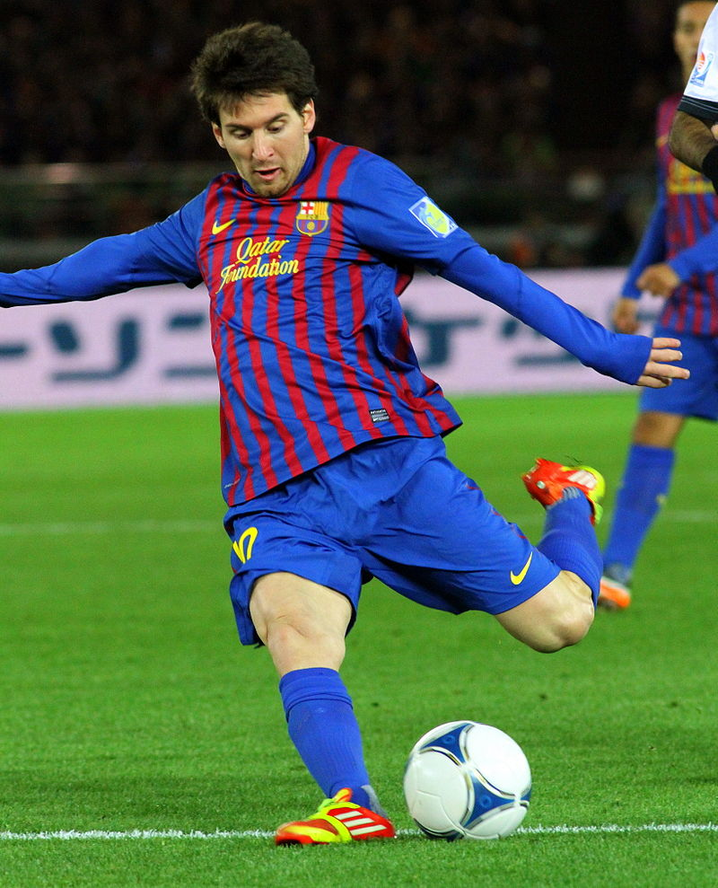
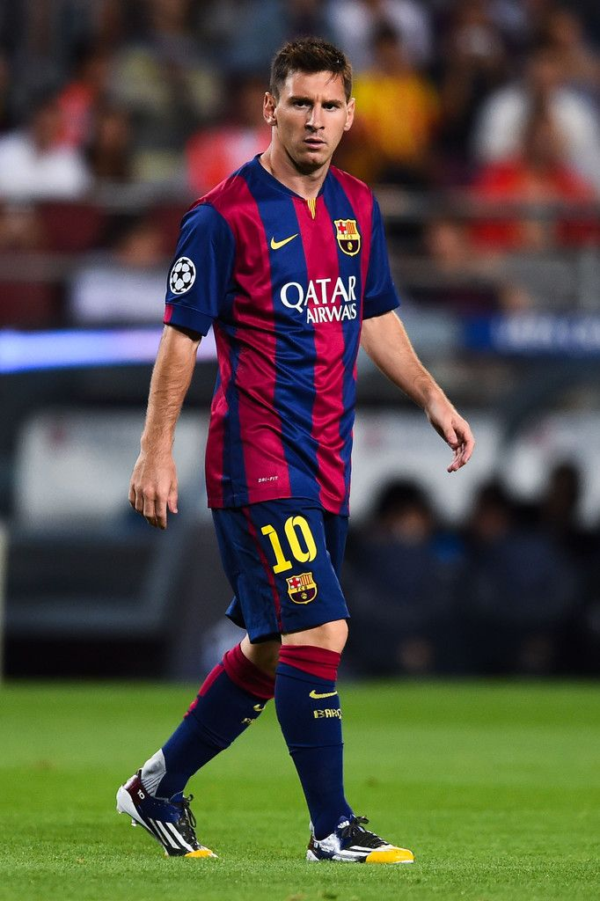

Messi zit nu natuurlijk aan de top van de wereld maar om daar te komen moest hij hard en gediciplineerd trainen.
In het seizoen van 2006-2007 speelde Messi zichzelf al in de basis, toen was Messi pas 17 jaar en dus al een vaste speler voor Barcelona.
Hij heeft in dit seizoen ook zijn eerste el classico gespeeld en scoorde ook gelijk een hattrick. Barca speelde hierdoor 3-3 met een man minder.
Hierdoor was Messi toen al een hele grote man in Barcelona. Messi bleef maar scoren en scoren en 1 seizoen had hij de mooiste goals van Maradonna na gedaan.
In het seizoen 2009-2010 zei Guardiola "Messi is de beste speler die ik ooit heb gezien". In dit seizoen was Messi ook de best betaalde voetballer met Ibrahimovic van de Spaans league.
Ze verdienden allebei rond de 10 miljoen en dat is alleen maar met voetbal inkomsten daarbij komen natuurlijk ook reclame's en sponsoren.
Toen Ronaldinho in 2009 wegging kreeg Messi zijn nu vertrouwde nummer 10. In dit seizoen won Barcelona ook voor de Spaanse beker de competitie en de champions league.
2010-2013
 In het seizoen 2010-2011 won Messi de FIFA Ballon d'Or, waarbij hij zijn teamgenoten Xavi en Iniesta versloeg.
Messi was voor het vierde opeenvolgende jaar genomineerd voor de prijs.
Messi's moeder was jarig en daar had Lionel wat leuks op bedacht als hij scoorde zou hij zijn shirt omhoog doen en daarop stond loveyou mommie!!.
In de Champions League-finale maakte Messi het 2e doelpunt in de 3-1-overwinning tegen Manchester United. Met dit 12e doelpunt in dit champions league jaar,
evenaarde Messi het record van Ruud van Nistelrooij uit het seizoen 2002/2003. the boxer model. Op 7 maart 2012 won FC Barcelona in de Champions League van Bayer Leverkussen met 7-1.
Messi maakte vijf van de zeven doelpunten. Daarmee schreef hij geschiedenis, want nog nooit had een speler vijf doelpunten gemaakt in een Champions League-duel.
Hiermee ging Messi (54 doelpunten) ook Thierry Henry (50 doelpunten) voorbij in de lijst van topschutters aller tijden.
Dit seizoen werd Messi de winnaar van de Gouden Schoen, voor Cristiano Ronaldo en Robin van Persie.
2013-2016
Barcelona heeft in het seizoen van 2013-2014 'maar' 1 prijs gepakt namelijk de Supercopa.
In vergelijking met de voorgaande seizoenen was Messi dit seizoen ook opvallend minder betrokken bij doelpunten.
Hij maakte 41 doelpunten en gaf 14 assists. Messi werd op zaterdag 22 november 2014 topscorer aller tijden van de Primera División.
Hij scoorde die dag drie keer tegen Sevilla en bracht zijn totaal in de Spaanse competitie daarmee op 253 doelpunten, twee meer dan voormalig recordhouder Telmo Zarra.
Op de voorlaatste speeldag scoorde Messi de enige goal van de wedstrijd tegen Atletico Madrid in het Calderon stadion hierdoor kon Real Madrid de kloof van 4 punten niet meer inhalen en werd FC Barcelona kampioen.
Barcelona won dit jaar ook de champions league.Op 30 december speelde Messi zijn 500e wedstrijd voor FC Barcelona in de met 4-0 gewonnen wedstrijd tegen Real Betis, Messi was een van de doelpuntenmakers.
Op 11 januari won Messi zijn 5e FIFA Ballon d'Or, een absoluut record. Op woensdag 3 februari scoorde Messi zijn 500e goal uit zijn carrière
2016-heden
Messi won op donderdag 18 augustus met FC Barcelona de Supercopa 2016 door Sevilla FC te verslaan.
Op zaterdag 27 mei scoorde Messi 1 keer in de met 3-1 gewonnen Copa del Rey-finale tegen Alaves, hiermee bracht hij het aantal trofeeën gewonnen met Barcelona op 30, een record dat hij deelt met Iniesta.
Messi werd in het seizoen van 2017-2018 de eerste speler die zowel in La Liga, de Copa del Rey, de Supercopa, de Champions League en vriendschappelijk tegen Real Madrid wist te scoren.
de overwinnning in de laatste speelronde zorgde ervoor dat Barcelona Spaans kampioen werd en Messi samen met Iniesta het record van aantal titels met een Spaanse club op 32 bracht. Messi sloot het seizoen af als topscorer in La Liga met 34 doelpunten en als topscorer in Europa.
Het was zijn vijfde golden boot, een record. Tijdens de voorbereiding van het seizoen 2019–2020 raakte Messi geblesseerd aan de kuit want Messi wordt vaak neergehaald, waardoor hij pas tijdens de Champions League-wedstrijd tegen Borussia Dortmund op dinsdag 17 september in de 60e minuut zijn eerste officiële minuten van het nieuwe seizoen kon maken.
Op zaterdag 21 december scoorde Messi tegen Deportivo Alavés zijn 50e goal in het kalenderjaar 2019.
Het was voor de 9e keer dat hij erin slaagde om minstens 50 doelpunten in een kalenderjaar te scoren.
 moest hij hard en gediciplineerd trainen.
In het seizoen van 2006-2007 speelde Messi zichzelf al in de basis, toen was Messi pas 17 jaar en dus al een vaste speler voor Barcelona.
Hij heeft in dit seizoen ook zijn eerste el classico gespeeld en scoorde ook gelijk een hattrick. Barca speelde hierdoor 3-3 met een man minder.
Hierdoor was Messi toen al een hele grote man in Barcelona. Messi bleef maar scoren en scoren en 1 seizoen had hij de mooiste goals van Maradonna na gedaan.
In het seizoen 2009-2010 zei Guardiola "Messi is de beste speler die ik ooit heb gezien". In dit seizoen was Messi ook de best betaalde voetballer met Ibrahimovic van de Spaans league.
Ze verdienden allebei rond de 10 miljoen en dat is alleen maar met voetbal inkomsten daarbij komen natuurlijk ook reclame's en sponsoren.
Toen Ronaldinho in 2009 wegging kreeg Messi zijn nu vertrouwde nummer 10. In dit seizoen won Barcelona ook voor de Spaanse beker de competitie en de champions league.
moest hij hard en gediciplineerd trainen.
In het seizoen van 2006-2007 speelde Messi zichzelf al in de basis, toen was Messi pas 17 jaar en dus al een vaste speler voor Barcelona.
Hij heeft in dit seizoen ook zijn eerste el classico gespeeld en scoorde ook gelijk een hattrick. Barca speelde hierdoor 3-3 met een man minder.
Hierdoor was Messi toen al een hele grote man in Barcelona. Messi bleef maar scoren en scoren en 1 seizoen had hij de mooiste goals van Maradonna na gedaan.
In het seizoen 2009-2010 zei Guardiola "Messi is de beste speler die ik ooit heb gezien". In dit seizoen was Messi ook de best betaalde voetballer met Ibrahimovic van de Spaans league.
Ze verdienden allebei rond de 10 miljoen en dat is alleen maar met voetbal inkomsten daarbij komen natuurlijk ook reclame's en sponsoren.
Toen Ronaldinho in 2009 wegging kreeg Messi zijn nu vertrouwde nummer 10. In dit seizoen won Barcelona ook voor de Spaanse beker de competitie en de champions league.